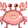
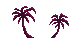

Ocean Man
Game Title: Ocean man
Programmer name: Nick Pokidaylo
Artist name: Yixin Cao
Producer: Nick Pokidaylo
Designer: Yixin Cao
Description: Ocean man was surfing on Malibu beach when he suddenly crashes and loses his surfboard and is now walking on the beach to find it. The game controls Ocean man as he jumps and moves toward, running across the sand and searching for his surfboard, finding the board and achieving his goal, and eventually, the Jump man can surf in the ocean.
Game Objects: (list them) Ocean man, crabs, surfboard
Sounds: (again, list them) Beach music, surf sound, crab pinch sound
Controls: Jumping moving forward, backward, upward, downward
Game flow: The game flow is very much like any other typical platformer you would find, heavily inspired by a Mario game's flow. That means that the player chooses the pace at which the game is played
Levels: (generally this will be tutorial and first level, but explain) normal level and possibly a boss fight level




